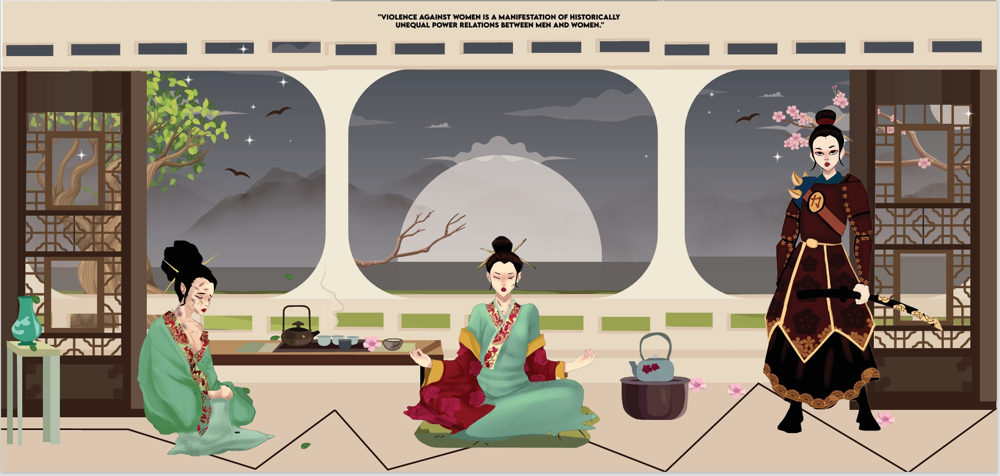

Buddhism Art in Ancient China
In South Africa, gender-based violence is still a major problem, especially when it comes to women. It can take many different forms, including sexual assault, harassment, and domestic abuse. I approached this issue artistically by creating a triptych that contrasts the gravity of gender-based violence with the philosophical teachings of Buddhism and the calm and contemplative art of tea in ancient East Asia. East Asian tea culture is rooted in tradition and suggests peace, respect and awareness. In addition to providing something to drink, the custom of making and serving tea promotes a feeling of community and connection. Tea drinking is considered a meditative practice in Buddhism, which emphasises the value of patience, present, and introspection.
Warrior
Chinese Buddhism places emphasis on internal strength and rebirth, especially through suffering. which fits the narrative from a broken beginning (abuse) to a powerful transformation. The kimono reflects cultural beauty and fragility, while her warrior form channels the tiger-hearted strength of Chinese deities and heroines.
Characters

.jpeg)
Gallery
I included images of tea ceremonies in my triptych to represent the beauty of harmonious relationships and to imply that fostering mutual respect and understanding among people may aid in the fight against the widespread problem of gender-based violence.